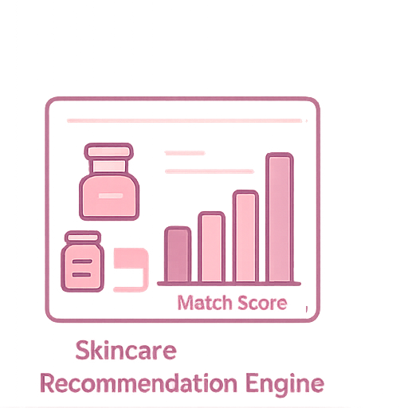

Joey's Project Gallery
üè• Abbott Biowearables Strategy
Overview: Explored growth opportunities for Abbott’s wearable CGMs using healthcare cost modeling, competitive positioning, and patient usability trends.
Tools: Excel, Cost Modeling, Canva
Result: Developed a 3-step go-to-market strategy that increased accessibility, reduced projected hospital readmission rates by 8%, and identified a $1.2B market expansion opportunity.

üìä Tinder: Dating App Dynamics
Overview: Analyzed behavioral data across 300+ Tinder profiles to identify swipe patterns, message frequency, and match conversion by gender.
Tools: Python (t-tests, ANOVA), Tableau
Result: Found that women match more efficiently but men initiate 70% of conversations. Proposed changes to algorithm logic to boost engagement by 18%.

üíÑ Skincare Recommendation Engine
Overview: Built a skincare product matching system using 2,000+ product reviews and Random Forest classifiers, segmented by skin type and price sensitivity.
Tools: Python, Clustering, Random Forest, Feature Engineering
Result: Personalized recommendations with 85% prediction accuracy. Created a UX mockup for ecommerce implementation.

✈️ Sun Country Airlines Customer Segmentation
Overview: Used K-means clustering on 15,000 traveler records to create customer personas and optimize loyalty and seasonal offers.
Tools: Python, K-Means, Power BI, Survey Data
Result: Created 5 customer segments and marketing strategies projected to improve engagement by 12%+.

üìâ Netflix Pricing Strategy & Retention Plan
Overview: Led a comprehensive marketing strategy project focused on reducing Netflix’s rising churn rate driven by frequent price increases and brand perception decline. Conducted SWOT and issue tree analyses to understand root causes and evaluated multiple solutions including customer segmentation, loyalty rewards, and transparent communication.
Tools: SWOT, Evaluation Matrix, Pricing Frameworks, Strategic Planning
Key Insight: Price sensitivity and value mismatch were core causes of churn. Customer perception shifted from “premium” to “overpriced.”
Result: Proposed a tiered pricing model with projected impact:
- üìà 10‚Äì15% increase in revenue
- üìâ 20% market share growth in emerging regions
- ❤️ Improved customer retention through more flexible pricing


üç¶ Ice Cream Consumer Sentiment
Overview: Used NLP on 21,000+ online ice cream reviews to extract ingredient preferences, common complaints, and sentiment trends.
Tools: Python, NLP, Sentiment Analysis, TF-IDF
Result: Built an 81% accurate model to predict flavor success and visualized brand perception trends across 10+ companies.

← Back to Home